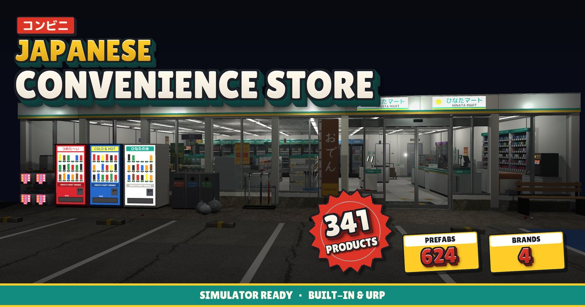

Japanese Convenience Store
624 prefabs · 4 brands · S / M / L layouts
A full Japanese konbini with shelves, fridges, hot food counter, restroom and a delivery truck — reskinnable into four original store brands with one click.
What's inside
- 341 products in stepped variants: drinks, snacks, bento, onigiri and more
- Oden, fryer, coffee machine, microwave and register with moving parts
- Openable doors, cartons and fridges; shelf slot grid for stocking
- 4 original store brands via a theme switcher
- Small / Medium / Large ready-made store layouts
- Bonus scripts, LODs, colliders, Built-in + URP, product catalog CSV